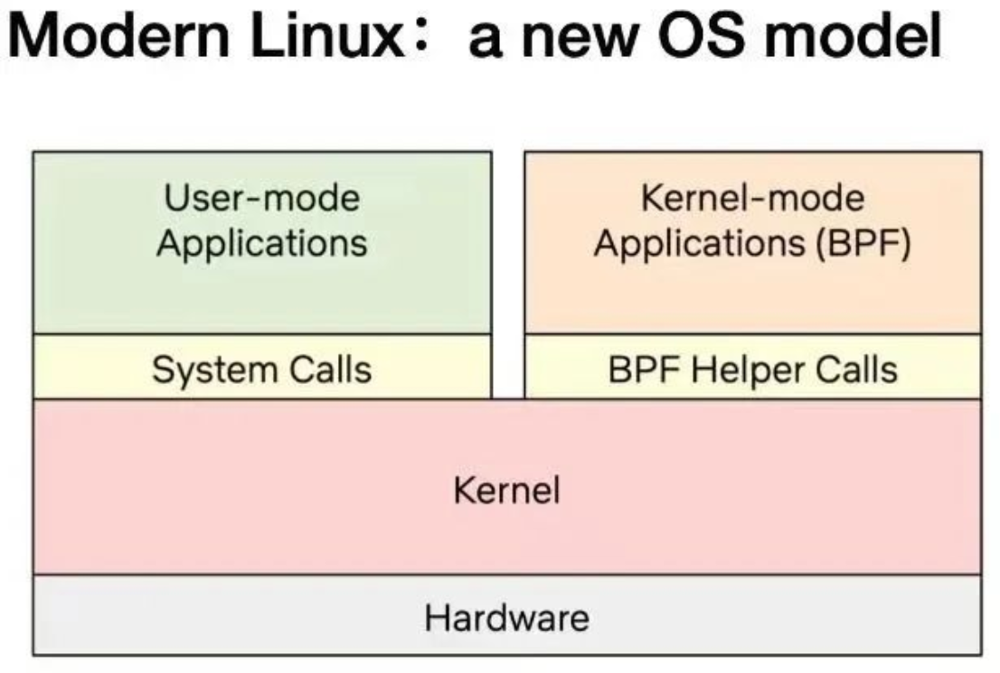

eBPF 入门开发实践教程零：介绍 eBPF 的基本概念、常见的开发工具
1. eBPF简介：安全和有效地扩展内核
eBPF 是一项革命性的技术，起源于 Linux 内核，可以在操作系统的内核中运行沙盒程序。它被用来安全和有效地扩展内核的功能，而不需要改变内核的源代码或加载内核模块。eBPF 通过允许在操作系统内运行沙盒程序，应用程序开发人员可以在运行时，可编程地向操作系统动态添加额外的功能。然后，操作系统保证安全和执行效率，就像在即时编译（JIT）编译器和验证引擎的帮助下进行本地编译一样。eBPF 程序在内核版本之间是可移植的，并且可以自动更新，从而避免了工作负载中断和节点重启。
今天，eBPF被广泛用于各类场景：在现代数据中心和云原生环境中，可以提供高性能的网络包处理和负载均衡；以非常低的资源开销，做到对多种细粒度指标的可观测性，帮助应用程序开发人员跟踪应用程序，为性能故障排除提供洞察力；保障应用程序和容器运行时的安全执行，等等。可能性是无穷的，而 eBPF 在操作系统内核中所释放的创新才刚刚开始[3]。
eBPF 的未来：内核的 JavaScript 可编程接口
对于浏览器而言，JavaScript 的引入带来的可编程性开启了一场巨大的革命，使浏览器发展成为几乎独立的操作系统。现在让我们回到 eBPF：为了理解 eBPF 对 Linux 内核的可编程性影响，对 Linux 内核的结构以及它如何与应用程序和硬件进行交互有一个高层次的理解是有帮助的[4]。

Linux 内核的主要目的是抽象出硬件或虚拟硬件，并提供一个一致的API（系统调用），允许应用程序运行和共享资源。为了实现这个目的，我们维护了一系列子系统和层，以分配这些责任[5]。每个子系统通常允许某种程度的配置，以考虑到用户的不同需求。如果不能配置所需的行为，就需要改变内核，从历史上看，改变内核的行为，或者让用户编写的程序能够在内核中运行，就有两种选择:
| 本地支持内核模块 | 写一个内核模块 |
|---|---|
| 改变内核源代码，并说服Linux内核社区相信这种改变是必要的。等待几年，让新的内核版本成为一种商品。 | 定期修复它，因为每个内核版本都可能破坏它。由于缺乏安全边界，冒着破坏你的Linux内核的风险 |
实际上，两种方案都不常用，前者成本太高，后者则几乎没有可移植性。
有了 eBPF，就有了一个新的选择，可以重新编程 Linux 内核的行为，而不需要改变内核的源代码或加载内核模块，同时保证在不同内核版本之间一定程度上的行为一致性和兼容性、以及安全性[6]。为了实现这个目的，eBPF 程序也需要有一套对应的 API，允许用户定义的应用程序运行和共享资源 --- 换句话说，某种意义上讲 eBPF 虚拟机也提供了一套类似于系统调用的机制，借助 eBPF 和用户态通信的机制，Wasm 虚拟机和用户态应用也可以获得这套“系统调用”的完整使用权，一方面能可编程地扩展传统的系统调用的能力，另一方面能在网络、文件系统等许多层次实现更高效的可编程 IO 处理。

正如上图所示，当今的 Linux 内核正在向一个新的内核模型演化：用户定义的应用程序可以在内核态和用户态同时执行，用户态通过传统的系统调用访问系统资源，内核态则通过 BPF Helper Calls 和系统的各个部分完成交互。截止 2023 年初，内核中的 eBPF 虚拟机中已经有 220 多个Helper 系统接口，涵盖了非常多的应用场景。
值得注意的是，BPF Helper Call 和系统调用二者并不是竞争关系，它们的编程模型和有性能优势的场景完全不同，也不会完全替代对方。对 Wasm 和 Wasi 相关生态来说，情况也类似，专门设计的 wasi 接口需要经历一个漫长的标准化过程，但可能在特定场景能为用户态应用获取更佳的性能和可移植性保证，而 eBPF 在保证沙箱本质和可移植性的前提下，可以提供一个快速灵活的扩展系统接口的方案。
目前的 eBPF 仍然处于早期阶段，但是借助当前 eBPF 提供的内核接口和用户态交互的能力，经由 Wasm-bpf 的系统接口转换，Wasm 虚拟机中的应用已经几乎有能力获取内核以及用户态任意一个函数调用的数据和返回值（kprobe，uprobe...）；以很低的代价收集和理解所有系统调用，并获取所有网络操作的数据包和套接字级别的数据（tracepoint，socket...）；在网络包处理解决方案中添加额外的协议分析器，并轻松地编程任何转发逻辑（XDP，TC...），以满足不断变化的需求，而无需离开Linux内核的数据包处理环境。
不仅如此，eBPF 还有能力往用户空间任意进程的任意地址写入数据（bpf_probe_write_user[7]），有限度地修改内核函数的返回值（bpf_override_return[8]），甚至在内核态直接执行某些系统调用[9]；所幸的是，eBPF 在加载进内核之前对字节码会进行严格的安全检查，确保没有内存越界等操作，同时，许多可能会扩大攻击面、带来安全风险的功能都是需要在编译内核时明确选择启用才能使用的；在 Wasm 虚拟机将字节码加载进内核之前，也可以明确选择启用或者禁用某些 eBPF 功能，以确保沙箱的安全性。
除了内核态的 eBPF 运行时，eBPF 也可以拓展到用户空间，例如 bpftime，实现更高性能的用户态追踪、性能分析、插件等等。
2. 关于如何学习 eBPF 相关的开发的一些建议
本文不会对 eBPF 的原理做更详细的介绍，不过这里有一个学习规划和参考资料，也许会有一些价值：
eBPF 入门（5-7h）
- Google 或者其他搜索引擎查找：eBPF
- 询问 ChatGPT 之类的东西：eBPF 是什么？
推荐：
- 阅读 ebpf 简介：https://ebpf.io/ （30min）
- 简要了解一下 ebpf 内核相关文档：https://prototype-kernel.readthedocs.io/en/latest/bpf/ （知道有问题去哪里查询，30min）
- 阅读 ebpf 中文入门指南：https://www.ebpf.top/post/ebpf_intro （1h）
- 有大量的参考资料：https://github.com/zoidbergwill/awesome-ebpf （2-3h）
- 可以选自己感兴趣的 PPT 翻一翻：https://github.com/gojue/ebpf-slide （1-2h）
回答三个问题：
- 了解 eBPF 是什么东西？为啥要有这个玩意，不能用内核模块？
- 它有什么功能？能在 Linux 内核里面完成哪些事情？有哪些 eBPF 程序的类型和 helper（不需要知道全部，但是需要知道去哪里找）？
- 能拿来做什么？比如说在哪些场景中进行运用？网络、安全、可观测性？
了解如何开发 eBPF 程序（10-15h）
了解并尝试一下 eBPF 开发框架：
- BCC 开发各类小工具的例子：https://github.com/iovisor/bcc/blob/master/docs/tutorial_bcc_python_developer.md （跑一遍，3-4h）
- libbpf 的一些例子：https://github.com/libbpf/libbpf-bootstrap （选感兴趣的运行一下，并阅读一下源代码，2h）
- 基于 libbpf 和 eunomia-bpf 的教程：https://github.com/eunomia-bpf/bpf-developer-tutorial （阅读 1-10 的部分，3-4h）
其他开发框架：Go 语言或者 Rust 语言，请自行搜索并且尝试（0-2h）
有任何问题或者想了解的东西，不管是不是和本项目相关，都可以在本项目的 discussions 里面开始讨论。
回答一些问题，并且进行一些尝试（2-5h）：
- 如何开发一个最简单的 eBPF 程序？
- 如何用 eBPF 追踪一个内核功能或函数？有很多种方法，举出对应的代码；
- 有哪些方案能通过用户态和内核态通信？如何从用户态向内核态传送信息？如何从内核态向用户态传递信息？举出代码示例；
- 编写一个你自己的 eBPF 程序，实现一个功能；
- eBPF 程序的整个生命周期里面，分别在用户态和内核态做了哪些事情？
3. 如何使用eBPF编程
原始的eBPF程序编写是非常繁琐和困难的。为了改变这一现状，llvm于2015年推出了可以将由高级语言编写的代码编译为eBPF字节码的功能，同时，eBPF 社区将 bpf() 等原始的系统调用进行了初步地封装，给出了libbpf库。这些库会包含将字节码加载到内核中的函数以及一些其他的关键函数。在Linux的源码包的samples/bpf/目录下，有大量Linux提供的基于libbpf的eBPF样例代码。
一个典型的基于 libbpf 的eBPF程序具有*_kern.c和*_user.c两个文件，*_kern.c中书写在内核中的挂载点以及处理函数，*_user.c中书写用户态代码，完成内核态代码注入以及与用户交互的各种任务。 更为详细的教程可以参考该视频然而由于该方法仍然较难理解且入门存在一定的难度，因此现阶段的eBPF程序开发大多基于一些工具，比如：
- BCC
- BPFtrace
- libbpf-bootstrap
- Go eBPF library
以及还有比较新的工具，例如 eunomia-bpf.
编写 eBPF 程序
eBPF 程序由内核态部分和用户态部分构成。内核态部分包含程序的实际逻辑，用户态部分负责加载和管理内核态部分。使用 eunomia-bpf 开发工具，只需编写内核态部分的代码。
内核态部分的代码需要符合 eBPF 的语法和指令集。eBPF 程序主要由若干个函数组成，每个函数都有其特定的作用。可以使用的函数类型包括：
- kprobe：插探函数，在指定的内核函数前或后执行。
- tracepoint：跟踪点函数，在指定的内核跟踪点处执行。
- raw_tracepoint：原始跟踪点函数，在指定的内核原始跟踪点处执行。
- xdp：网络数据处理函数，拦截和处理网络数据包。
- perf_event：性能事件函数，用于处理内核性能事件。
- kretprobe：函数返回插探函数，在指定的内核函数返回时执行。
- tracepoint_return：跟踪点函数返回，在指定的内核跟踪点返回时执行。
- raw_tracepoint_return：原始跟踪点函数返回，在指定的内核原始跟踪
BCC
BCC全称为BPF Compiler Collection，该项目是一个python库， 包含了完整的编写、编译、和加载BPF程序的工具链，以及用于调试和诊断性能问题的工具。
自2015年发布以来，BCC经过上百位贡献者地不断完善后，目前已经包含了大量随时可用的跟踪工具。其官方项目库 提供了一个方便上手的教程，用户可以快速地根据教程完成BCC入门工作。
用户可以在BCC上使用Python、Lua等高级语言进行编程。 相较于使用C语言直接编程，这些高级语言具有极大的便捷性，用户只需要使用C来设计内核中的 BPF程序，其余包括编译、解析、加载等工作在内，均可由BCC完成。
然而使用BCC存在一个缺点便是在于其兼容性并不好。基于BCC的 eBPF程序每次执行时候都需要进行编译，编译则需要用户配置相关的头文件和对应实现。在实际应用中， 相信大家也会有体会，编译依赖问题是一个很棘手的问题。也正是因此，在本项目的开发中我们放弃了BCC， 选择了可以做到一次编译-多次运行的libbpf-bootstrap工具。
eBPF Go library
eBPF Go库提供了一个通用的eBPF库，它解耦了获取 eBPF 字节码的过程和 eBPF 程序的加载和管理，并实现了类似 libbpf 一样的 CO- 功能。eBPF程序通常是通过编写高级语言创建的，然后使用clang/LLVM编译器编译为eBPF字节码。
libbpf
libbpf-bootstrap是一个基于libbpf库的BPF开发脚手架，从其
github 上可以得到其源码。
libbpf-bootstrap综合了BPF社区过去多年的实践，为开发者提了一个现代化的、便捷的工作流，实
现了一次编译，重复使用的目的。
基于libbpf-bootstrap的BPF程序对于源文件有一定的命名规则，
用于生成内核态字节码的bpf文件以.bpf.c结尾，用户态加载字节码的文件以.c结尾，且这两个文件的
前缀必须相同。
基于libbpf-bootstrap的BPF程序在编译时会先将*.bpf.c文件编译为
对应的.o文件，然后根据此文件生成skeleton文件，即*.skel.h，这个文件会包含内核态中定义的一些
数据结构，以及用于装载内核态代码的关键函数。在用户态代码include此文件之后调用对应的装载函数即可将
字节码装载到内核中。同样的，libbpf-bootstrap也有非常完备的入门教程，用户可以在该处
得到详细的入门操作介绍。
eunomia-bpf
开发、构建和分发 eBPF 一直以来都是一个高门槛的工作，使用 BCC、bpftrace 等工具开发效率高、可移植性好，但是分发部署时需要安装 LLVM、Clang等编译环境，每次运行的时候执行本地或远程编译过程，资源消耗较大；使用原生的 CO-RE libbpf时又需要编写不少用户态加载代码来帮助 eBPF 程序正确加载和从内核中获取上报的信息，同时对于 eBPF 程序的分发、管理也没有很好地解决方案。
eunomia-bpf 是一个开源的 eBPF 动态加载运行时和开发工具链，是为了简化 eBPF 程序的开发、构建、分发、运行而设计的，基于 libbpf 的 CO-RE 轻量级开发框架。
使用 eunomia-bpf ，可以：
- 在编写 eBPF 程序或工具时只编写内核态代码，自动获取内核态导出信息，并作为模块动态加载；
- 使用 WASM 进行用户态交互程序的开发，在 WASM 虚拟机内部控制整个 eBPF 程序的加载和执行，以及处理相关数据；
- eunomia-bpf 可以将预编译的 eBPF 程序打包为通用的 JSON 或 WASM 模块，跨架构和内核版本进行分发，无需重新编译即可动态加载运行。
eunomia-bpf 由一个编译工具链和一个运行时库组成, 对比传统的 BCC、原生 libbpf 等框架，大幅简化了 eBPF 程序的开发流程，在大多数时候只需编写内核态代码，即可轻松构建、打包、发布完整的 eBPF 应用，同时内核态 eBPF 代码保证和主流的 libbpf, libbpfgo, libbpf-rs 等开发框架的 100% 兼容性。需要编写用户态代码的时候，也可以借助 Webassembly 实现通过多种语言进行用户态开发。和 bpftrace 等脚本工具相比, eunomia-bpf 保留了类似的便捷性, 同时不仅局限于 trace 方面, 可以用于更多的场景, 如网络、安全等等。
- eunomia-bpf 项目 Github 地址: https://github.com/eunomia-bpf/eunomia-bpf
- gitee 镜像: https://gitee.com/anolis/eunomia
参考资料
- eBPF 介绍：https://ebpf.io/
- BPF Compiler Collection (BCC)：https://github.com/iovisor/bcc
- eunomia-bpf：https://github.com/eunomia-bpf/eunomia-bpf
您还可以访问我们的教程代码仓库 https://github.com/eunomia-bpf/bpf-developer-tutorial 或网站 https://eunomia.dev/zh/tutorials/ 以获取更多示例和完整的教程源代码。我们会继续分享更多有关 eBPF 开发实践的内容，帮助您更好地理解和掌握 eBPF 技术。